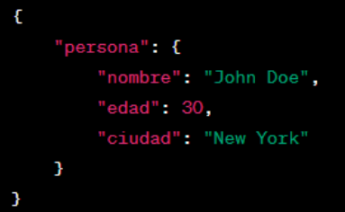

JSON, por otro lado, utiliza una sintaxis más concisa y menos verbosa. Los datos se representan como pares clave-valor dentro de objetos, y los arrays proporcionan una estructura ordenada. La simplicidad de JSON facilita su lectura y escritura, así como su interpretación por parte de las aplicaciones.
